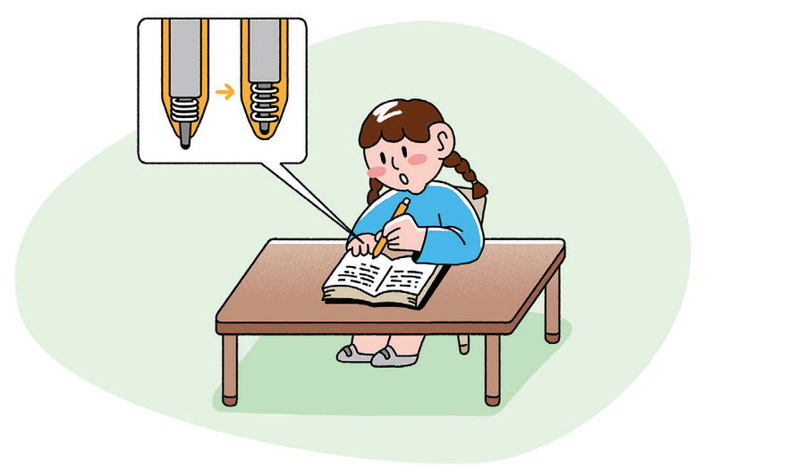
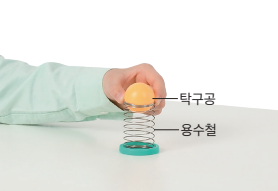
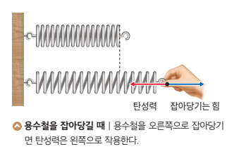
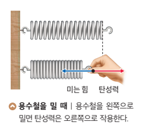
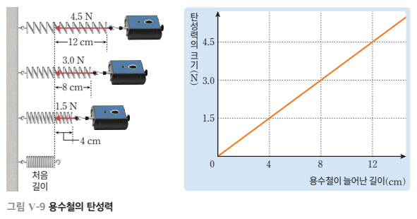
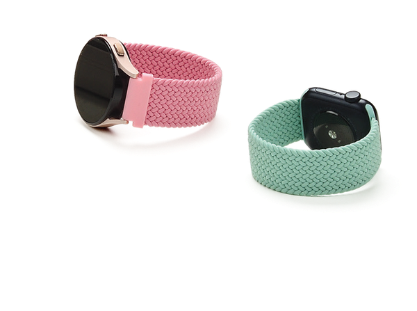
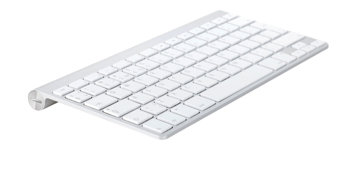
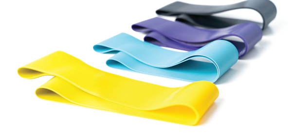
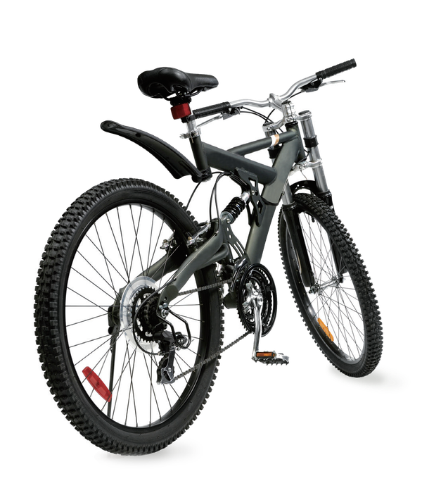
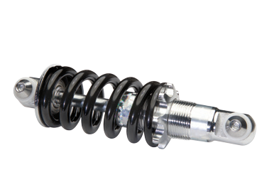

5. 힘의 작용 › 여러 가지 힘 › 탄성력
볼펜 심은 왜 다시 들어갈까?
볼펜 위쪽을 누르면 심이 나오고, 한 번 더 누르면 쏙 들어가요. 늘어나거나 줄어든 물체가 원래 모양으로 돌아가려는 힘, 탄성력에 대해 알아봐요.
🖊️🏓🚲
↩ 이전 내용 확인하기
지난 시간에 배운 중력, 기억나나요?
1지구 위 어디에서나 중력이 작용하는 방향은?
정답은 지구 중심 방향! 사람이 지구 어디에 있든 중력은 지구 중심을 향해요.
2지구에서 무게가 60 N인 물체를 달에 가져가면 무게와 질량은 어떻게 될까?
📌 무게는 약 1/6인 10 N으로 줄지만, 질량은 변하지 않아요. 오늘은 여러 가지 힘 가운데 두 번째, 탄성력을 알아봐요.
🎯 이 단원을 배우면
학습 목표
교과서 164~167쪽
2일상생활에서 탄성력을 이용하는 예를 설명할 수 있다.
💭 생각 깨우기
볼펜 심이 나왔다가 들어가는 까닭은?
교과서 164쪽

볼펜 속에는 용수철이 들어 있어 위쪽을 누르면 심이 나왔다가, 한 번 더 누르면 원래 상태로 되돌아간다. 볼펜 심을 원래 상태로 되돌아가게 하는 힘은 무엇일까?
볼펜 위쪽을 누르면 용수철이 줄어들면서 심이 나오고, 한 번 더 누르면 용수철이 원래 모양으로 되돌아가면서 심이 들어간다. 용수철이 원래 모양으로 돌아가려는 힘이 심을 다시 밀어 올리는 거예요.
🔬 해 보기 · 가상 활동
용수철로 쏘아 올린 탁구공 관찰하기
교과서 164쪽
용수철 위에 탁구공을 올려놓고 손으로 눌렀다가 놓아 보자. 용수철을 누르는 정도를 바꾸며 탁구공이 올라가는 높이를 비교해 보자.

① 용수철을 누르는 정도
012345칸
탁구공을 아래로 끌어내려도 눌러져요.
📋 관찰 기록 (압축한 길이 → 올라간 높이)
아직 기록이 없어요. 용수철을 누르고 손을 놓아 보자.
누르는 정도를 서로 다르게 하여 3번 이상 쏘아 올려 보자.
📝 활동 후 설명해 보기
- 1
용수철을 눌렀던 손을 놓는 순간 탁구공은 어떻게 되는가?
탁구공은 위로 튕겨 올라간다.
- 2
용수철을 압축한 길이와 탁구공이 올라간 높이 사이에는 어떤 관계가 있는지 설명해 보자.
용수철을 압축한 길이가 길수록 탁구공이 높이 올라간다.
📘 교과서 개념
탄성과 탄성력
교과서 165쪽
용수철을 손으로 눌렀다 놓으면 용수철은 원래 모양으로 되돌아가면서 탁구공을 위로 밀어 올린다.
변형된 물체가 원래 모양으로 되돌아가려는 성질을 탄성이라 하고, 변형된 물체가 원래 모양으로 되돌아가려고 하는 힘을 탄성력이라고 한다.
용수철을 압축한 길이가 길수록 탁구공이 더 높이 올라간 까닭은 용수철이 압축된 정도가 커서 탄성력이 크게 작용했기 때문이다. 즉, 탄성력은 탄성을 지닌 물체의 변형되는 정도가 클수록 커진다.
📎 탄성 한계 — 볼펜 속 용수철을 조금 당겼다 놓으면 원래 모양으로 돌아가지만, 너무 많이 당기면 늘어난 채로 돌아오지 않아요. 원래 모양으로 되돌아갈 수 있는 힘의 한계를 탄성 한계라고 하며, 이보다 큰 힘으로 변형시키면 원래 모양으로 돌아가지 않거나 끊어져요.
📘 교과서 개념
탄성력의 방향
교과서 165쪽
용수철을 손으로 잡아당기거나 밀 때 탄성력은 손이 용수철에 작용하는 힘의 방향과 반대 방향으로 작용한다. 이와 같이 탄성력은 탄성체를 변형시켰을 때 원래 모양으로 되돌아가려는 방향으로 작용한다.


그림 Ⅴ-7 탄성력의 방향
🖐️ 직접 당기고 밀어 보자
손(●)을 좌우로 끌거나 슬라이더를 움직여 용수철을 늘이거나 줄여 보자. 점선은 용수철의 처음 길이예요.
손이 용수철에 작용하는 힘탄성력
용수철의 변형처음 길이
탄성력의 방향—
탄성력의 크기0 N
📘 교과서 개념
탄성력의 크기
교과서 167쪽
용수철에 연결한 물체를 손으로 잡아당길 때 물체를 당기는 힘과 탄성력은 크기가 같고 방향이 반대이다. 또 용수철이 늘어난 길이는 물체를 당기는 힘의 크기에 비례하여 증가하므로 탄성력의 크기는 용수철이 늘어난 길이에 비례한다.

?그림 Ⅴ-9에서 용수철이 4 cm 늘어날 때마다 탄성력은 몇 N씩 커질까?
정답은 1.5 N! 늘어난 길이가 2배, 3배가 되면 탄성력도 2배, 3배가 돼요. 이런 관계를 비례라고 해요.
?같은 용수철이 16 cm 늘어나면 탄성력은?
정답은 6.0 N! 16 cm는 4 cm의 4배이므로 1.5 N × 4 = 6.0 N이에요.
🔬나중에 직접 확인해요!
용수철이 늘어난 길이와 탄성력이 정말 비례하는지는 뒤에서 ‘용수철의 탄성력 측정하기’ 탐구(교과서 166쪽)를 통해 힘 센서로 직접 측정하고 그래프로 나타내 볼 거예요. 오늘은 그림 Ⅴ-9의 결과로 관계를 먼저 이해해 두자.
🔎 생활 속 과학
탄성력의 이용
교과서 165쪽
우리 생활에서는 탄성력을 다양하게 이용하고 있다. 탄성력을 어떻게 이용하는지 먼저 생각해 본 뒤 설명을 열어 보자.

⌚ 시계 밴드
밴드의 탄성력을 이용해 손목둘레에 맞게 시계를 찰 수 있다.

⌨️ 컴퓨터 자판
자판을 손가락으로 누르면 탄성력에 의해 다시 위로 올라온다.

🧘 스트레칭 밴드
밴드의 탄성력을 이용해 운동을 한다. 밴드를 많이 늘일수록 탄성력이 커져 더 힘이 든다.

🚲 자전거 용수철

용수철의 탄성력을 이용해 울퉁불퉁한 길에서의 충격을 흡수한다.
➕ 더 알아보기 — 농구공을 튕길 때, 양궁에서 활로 화살을 날려 보낼 때, 장대높이뛰기 선수가 장대를 이용해 높이 뛰어오를 때, 기타 줄을 튕겨 소리를 낼 때도 탄성력을 이용해요.
✅ 스스로 확인하기
배운 내용, 확인해 볼까요?
교과서 167쪽
2문장이 옳으면 O, 옳지 않으면 X를 선택해 보자.
용수철을 밀 때 용수철이 줄어든 길이가 길수록 탄성력이 크다.
정답은 O! 탄성력은 변형된 정도가 클수록 커요. 늘어날 때뿐만 아니라 줄어들 때도 마찬가지예요.
3탐구 능력 | 그림 Ⅴ-9의 용수철을 이용해서 물체의 무게를 측정하는 방법을 이야기해 보자.
용수철에 물체를 매달아 물체가 멈춰 있을 때, 물체의 무게(중력)와 평형을 이루는 힘은 무엇일까? 지난 시간에 배운 힘의 평형을 떠올려 보자.
용수철에 물체를 매달았을 때 물체의 무게는 용수철의 탄성력과 평형을 이룬다. 용수철이 늘어난 길이에 따른 탄성력의 크기를 알고 있으므로, 이 용수철에 물체를 매달아 용수철이 늘어난 길이를 측정하면 물체의 무게를 알 수 있다. (예: 8 cm 늘어나면 무게는 3.0 N)
✏️ 개념 확인 문제
조금 더 풀어볼까요?
탄성력 연습 문제
1문장이 옳으면 O, 옳지 않으면 X를 선택해 보자.
탄성력은 물체를 변형시킨 힘과 같은 방향으로 작용한다.
정답은 X! 탄성력은 변형시킨 힘과 반대 방향, 즉 원래 모양으로 되돌아가려는 방향으로 작용해요.
2벽에 고정된 용수철을 손으로 왼쪽으로 밀었다. 손에 작용하는 탄성력의 방향은?
정답은 오른쪽! 줄어든 용수철은 원래 길이로 늘어나려고 하므로 미는 힘과 반대인 오른쪽으로 탄성력이 작용해요.
3어떤 용수철을 2 cm 늘였더니 탄성력이 1 N이었다. 이 용수철을 10 cm 늘이면 탄성력은?
정답은 5 N! 늘어난 길이가 5배이므로 탄성력도 1 N × 5 = 5 N이에요.
(1) 탄성력의 크기
(2) 탄성력의 방향
5탄성력을 이용한 예를 <보기>에서 모두 고르시오.
양궁 선수가 활시위를 당겼다 놓아 화살을 날려 보낸다.
다림추를 이용해 기둥이 똑바로 서 있는지 확인한다.
장대높이뛰기 선수가 휘어진 장대를 이용해 높이 뛰어오른다.
🧠 배운 내용 정리하기
이 단원에서 배운 내용을 정리해 보자.
교과서 164~167쪽
🔄탄성변형된 물체가 원래 모양으로 되돌아가려는 성질
🌀탄성력변형된 물체가 원래 모양으로 되돌아가려고 하는 힘
↩️탄성력의 방향원래 모양으로 되돌아가려는 방향 (변형시킨 힘과 반대 방향)
📈탄성력의 크기변형된 길이에 비례 (예: 4 cm → 1.5 N, 8 cm → 3.0 N)
⌚탄성력의 이용시계 밴드, 컴퓨터 자판, 스트레칭 밴드, 자전거 용수철
⚠️탄성 한계이보다 큰 힘을 주면 원래 모양으로 돌아가지 않거나 끊어진다.
🌱 평가 길잡이
활동을 잘했는지 생각하며 체크해 보자
교과서 164쪽
용수철을 눌렀다가 놓아서 탁구공이 위로 올라가는 현상을 관찰했는가?
용수철을 압축한 길이와 탁구공이 올라간 높이 사이의 관계를 설명할 수 있는가?
탄성력의 크기와 방향을 설명하고, 생활 속 이용 예를 말할 수 있는가?